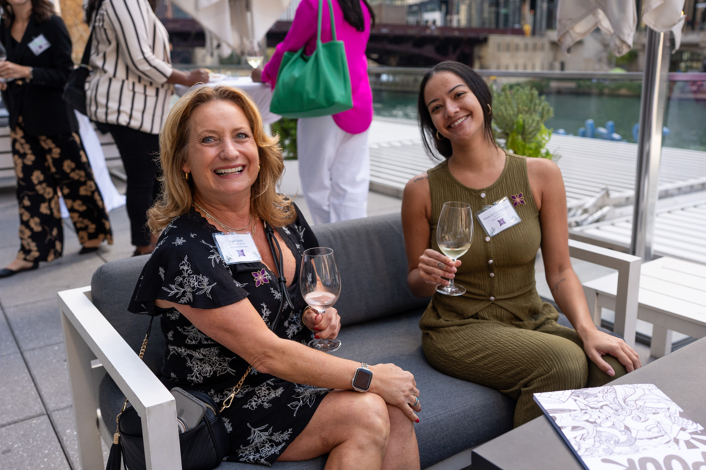
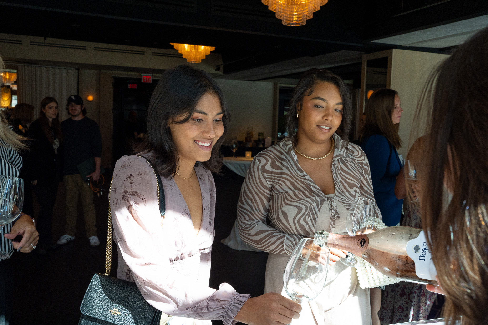

Wines Experience is excited to promote the Women in Wine & Spirits event, hosted by Fiere Italiane. Women in Wine & Spirits celebrates the innovators redefining Italy’s wine and spirits heritage while creating cross-border opportunities for collaboration and growth.
During the weekends of our fairs there will be special on and off-site programming bringing together women producers, buyers, media, and hospitality leaders for curated tastings, conversations, and networking.


